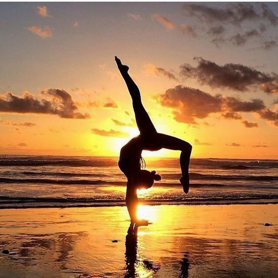

VANEL Lily
4ème 1 Julien ABSALON
Je suis encore loin de mon objectif, mais j'en suis plus proche
qu'hier.

- Faire de la gym
- Faire de la couture
- Être entre ami(e)s
- Faire du shopping
- Ecole des bords de Sienne (2013 à 2021)
- Collège Roland Vaudatin (2021 jusqu'à 2025)
| 2023
|
compétition de gym
(3éme)
|
| 2022
|
2éme au cross
|

Site du
Collège Roland Vaudatin
Site de la commune de Gavray
Page d'accueil